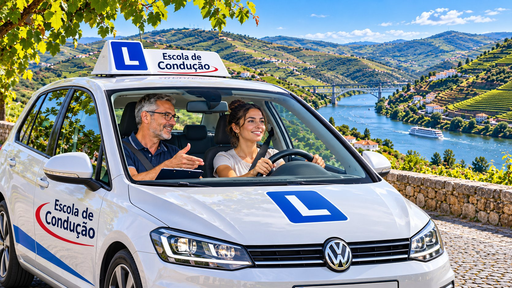

Wat zit er werkelijk in het rijschoolpakket?
Twee rijscholen kunnen allebei bijvoorbeeld € 850 vragen, terwijl het aantal lessen en de inbegrepen diensten verschillen. Vraag om een schriftelijk overzicht van wat wel én niet inbegrepen is.
Welke rijschool past bij jou? Wat kost je rijopleiding werkelijk? En hoe bereid je je voor op theorie en praktijk? Hier vind je concrete aandachtspunten voor een goede start — zonder onnodige verrassingen.
Ontdek de gidsIntroductieprijs € 9,99 Jouw route naar je rijbewijs!
Jouw route naar je rijbewijs!Een goede voorbereiding begint vóór je eerste rijles. De prijs vertelt maar een deel van het verhaal. Ook examenresultaten, lesplanning, beschikbare auto’s en contractafspraken verdienen aandacht.
Niet alle rijscholen behalen hetzelfde slagingspercentage. Een rijschool waar veel kandidaten in één keer slagen kan interessant zijn, maar kijk ook naar het aantal kandidaten, het meetjaar en de manier waarop de resultaten zijn berekend. Vraag naar de recente resultaten voor het praktijkexamen categorie B.
Concrete percentages per rijschool voegen we toe zodra de officiële IMT-cijfers en het bijbehorende jaar zijn gecontroleerd. We gebruiken hier bewust geen cijfer voor het theorie-examen.

De voorbeelden hieronder laten zien waarom het loont om vóór je inschrijving gerichte vragen te stellen. Ze zijn slechts een kleine selectie van alle onderwerpen in de gids.
Twee rijscholen kunnen allebei bijvoorbeeld € 850 vragen, terwijl het aantal lessen en de inbegrepen diensten verschillen. Vraag om een schriftelijk overzicht van wat wel én niet inbegrepen is.
Vraag afzonderlijk naar de kosten van een tweede theorie-examen en een tweede praktijkexamen. Denk ook aan extra rijlessen en het gebruik van de lesauto.
Niet elke rijschool behaalt hetzelfde slagingspercentage. Vraag naar recente resultaten voor het praktijkexamen categorie B en naar het aantal kandidaten waarop die cijfers zijn gebaseerd.
Combineer je je opleiding met werk of studie? Vraag welke dagen en uren beschikbaar zijn, hoeveel lessen je per week kunt boeken en hoe lang de wachttijd is.
Hoeveel mannelijke en hoeveel vrouwelijke rijinstructeurs werken er? Kun je zelf kiezen bij wie je lest en kun je tijdens je opleiding eventueel wisselen?
Niet elke rijschool beschikt over een automaat. Vraag welke lesauto’s beschikbaar zijn en welke rijbewijsbeperking kan gelden wanneer je in een automaat examen doet.
Kun je het praktijkexamen afleggen in dezelfde auto waarin je hebt leren rijden? Vraag vooraf of de school dit kan toezeggen en of daar extra kosten aan verbonden zijn.
In Portugal bestaat onder voorwaarden begeleid oefenen buiten de reguliere lessen. Je moet bij een rijschool zijn ingeschreven; voor de begeleider en auto gelden voorwaarden en een IMT-procedure.
Vraag je instructeur om een proefexamen onder realistische omstandigheden. Oefen lastige verkeerssituaties en ontdek welke voorbereiding helpt om rustiger te beginnen.
Een standaardcontract vermeldt niet altijd je persoonlijke wensen. Wil je bijvoorbeeld drie lessen per week of examen in je vaste lesauto? Vraag of de school dit schriftelijk wil vastleggen.
Welke lessen, oefenmogelijkheden en leermiddelen biedt de rijschool? Zijn ze bij de pakketprijs inbegrepen en hoe weet je of je klaar bent voor het examen?
Een intensief traject is niet voor iedereen de beste keuze. Vraag welke lesfrequentie haalbaar is, wat de wachttijden zijn en of betaling in termijnen mogelijk is.
Let op: de precieze wettelijke voorwaarden voor begeleid oefenen en examenprocedures moeten altijd bij de rijschool en het IMT worden gecontroleerd.

Je hoeft niet alle vragen zelf te bedenken. De gids helpt je bij het kiezen van een rijschool, het beoordelen van een offerte en contract, en de voorbereiding op je theorie- en praktijkexamen.
Met de checklist van 150 vragen en aandachtspunten kies je de onderwerpen die voor jouw situatie belangrijk zijn. Het zijn vragen voor je rijschoolkeuze, geen theorie-oefenvragen.
Bekijk wat de gids biedtEen praktische wegwijzer voor toekomstige bestuurders in Portugal: van het vergelijken van rijscholen tot een doordachte voorbereiding op theorie en praktijk.
De Guia da Carta de Condução is ontwikkeld om je te helpen een rijschool te kiezen die bij je wensen, planning en budget past. Je ontdekt waar kostenverschillen vandaan komen, welke afspraken je vooraf moet maken en hoe je je opleiding kunt organiseren.
De gids geeft informatie en praktische aandachtspunten, maar garandeert geen bepaald examenresultaat en vervangt geen officiële informatie van het IMT.
Onderstaand overzicht groepeert de belangrijkste onderwerpen. De precieze hoofdstuktitels en -nummering nemen we bij de definitieve publicatie over uit de volledige gids.
Selecteer de vragen die je belangrijk vindt en neem ze mee bij het vergelijken van rijscholen.
Gebruik de aandachtspunten om pakketten, extra diensten en mogelijke herexamens eerlijker te vergelijken.
Werk met gerichte vragen en adviezen voor je theorieopleiding, praktijklessen en examenvoorbereiding.
De gids bevat aanvullende informatie over onder meer officiële instanties en examenprocedures. Het exacte overzicht van alle bijlagen wordt overgenomen uit de definitieve gidsinhoud, zodat we niets beloven wat er niet in staat.
De gids is bedoeld voor Portugese én internationale toekomstige bestuurders. De introductie is gepland in Portugees, Engels en Nederlands. Bij voldoende belangstelling kunnen later andere talen volgen.
Deze website is voorlopig een Nederlandstalige testversie. De andere taalversies worden pas als beschikbaar aangeduid wanneer ze daadwerkelijk online staan.
Bekijk de introductieaanbiedingOnze nieuwe Guia da Carta de Condução is onlangs uitgebracht. Daarom bieden we hem tijdelijk aan voor slechts € 9,99.
Eenmalige betaling. Na aankoop kun je de gids gedurende 24 maanden online raadplegen op je telefoon, tablet of computer.
Geen PDF-download en geen abonnement met maandelijkse kosten.
24 maanden vanaf de aankoopdatum, zodra de verkoop en online toegang zijn geactiveerd.
Nee. De gids wordt uitsluitend online toegankelijk gemaakt.
De introductie is gepland in Portugees, Engels en Nederlands. Beschikbaarheid wordt per taal bevestigd bij de lancering.
Nee. De gids helpt je bij keuzes en voorbereiding, maar examenresultaten hangen af van meerdere factoren.
Heb je een vraag over de gids of wil je iets doorgeven? Hier komt de contactmogelijkheid.
We willen je bericht graag ontvangen. De contactfunctie wordt nog aangesloten; we tonen voorlopig geen formulier dat je bericht ongemerkt zou kwijtraken.